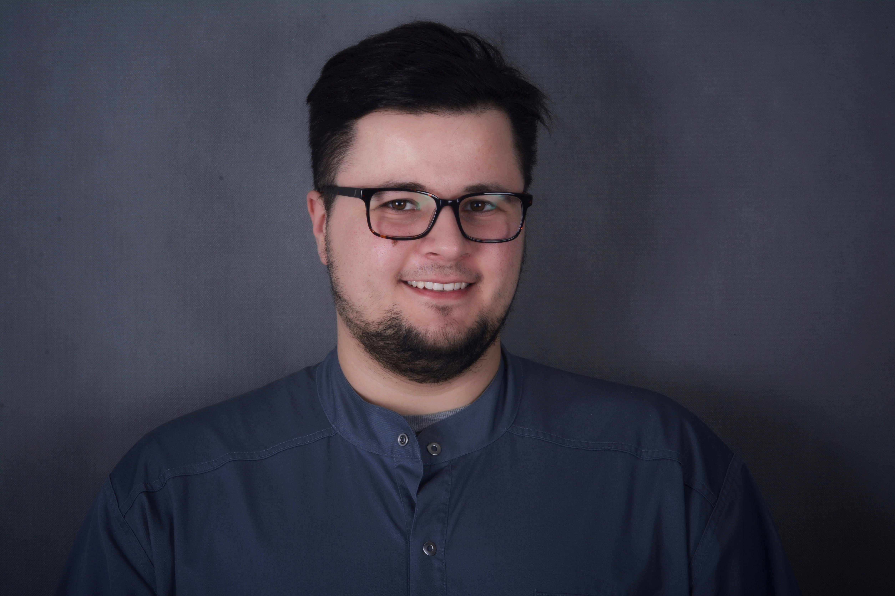

Jestem dyplomowanym terapeutą manulanym (Manual Therapy Plaatsman Concept opartej na dowodach naukowych). Aktualnie również student Medycyny Osteopatycznej na Osteopathie Schule Deutschland. Równolegle studiuje Psychologię na Instytucie Psychologii Uniwersytetu Opolskiego.

Moja praca zawodowa skupia się na terapii dysfunkcji narządu ruchu. Specjalizacja obejmuje fizjoterapię i rehabilitację ortopedyczną w tym leczenie zachowawcze oraz postępowanie przed i pooperacyjne schorzeń narządu ruchu (zaburzeń kręgosłupa, kończyny górnej i dolnej). Wykonuję również zabiegi EPTE Przeskórnej elektrolizy tendinopatii ścięgien pod kontrolą USG.
Moje zainteresowania to medycyna manualna, psychologia bólu oraz medycyna oparta na dowodach naukowych. Moja praca po godzinach przedstawia współautorstwo prac naukowych na temat: